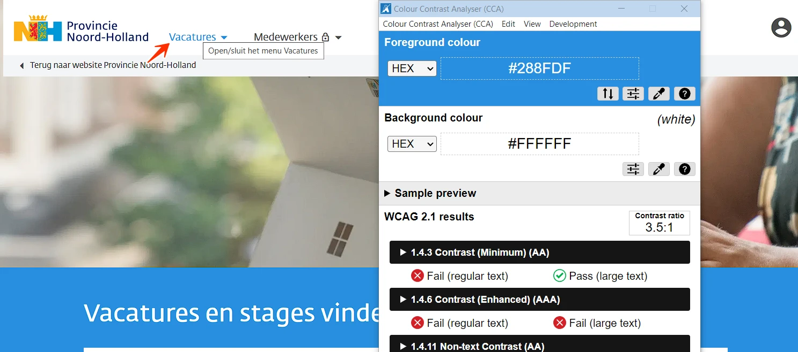
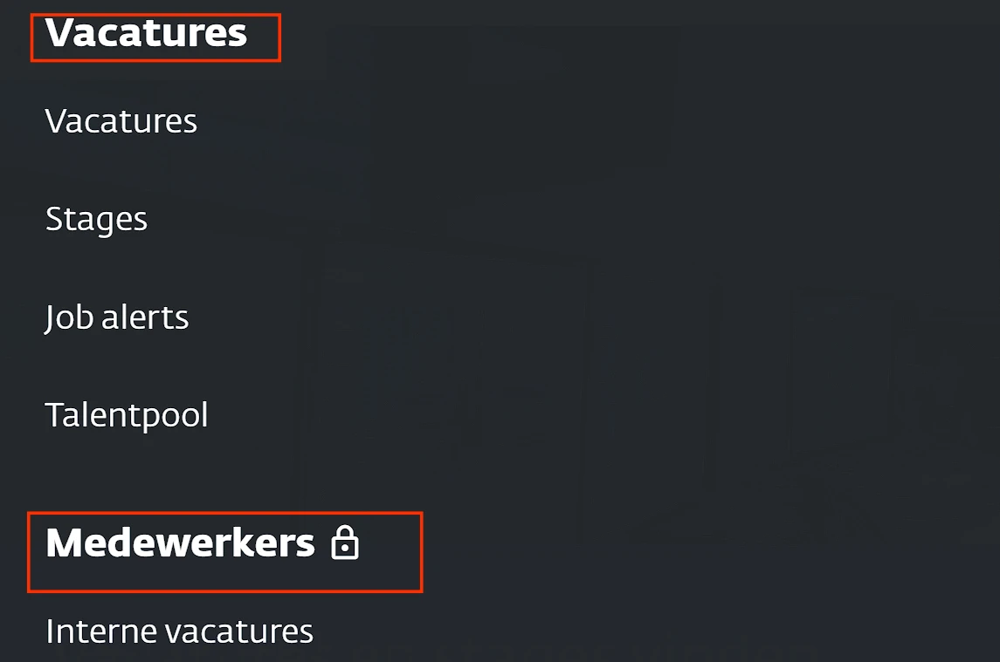
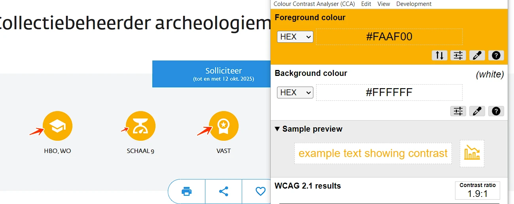
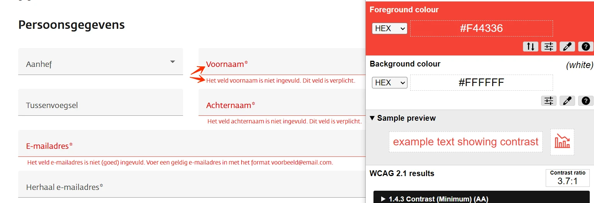
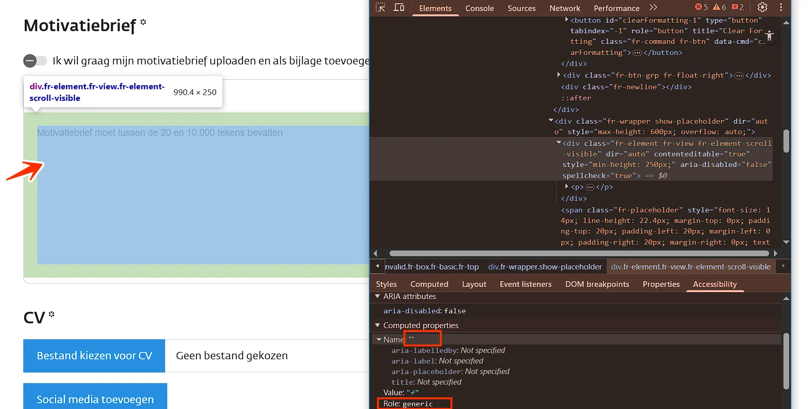
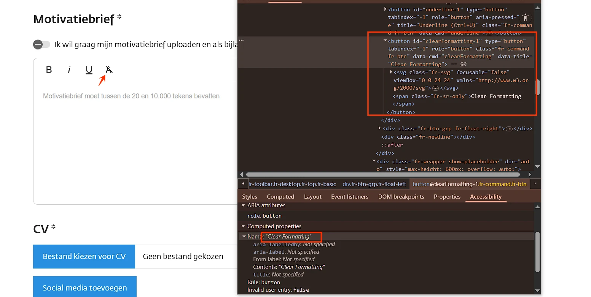
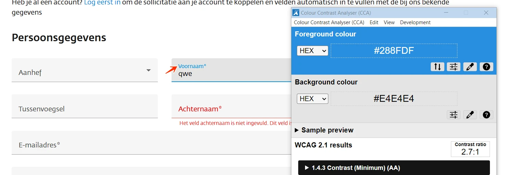
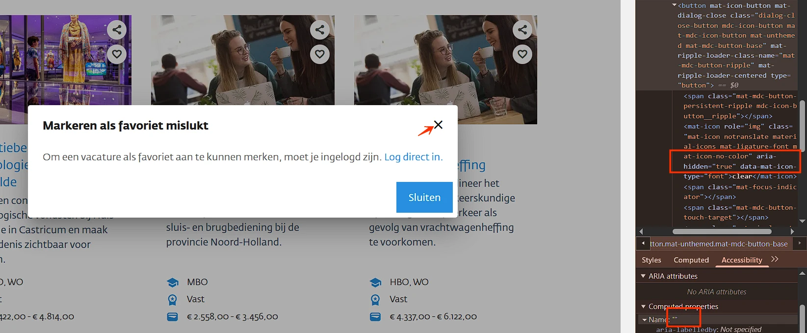
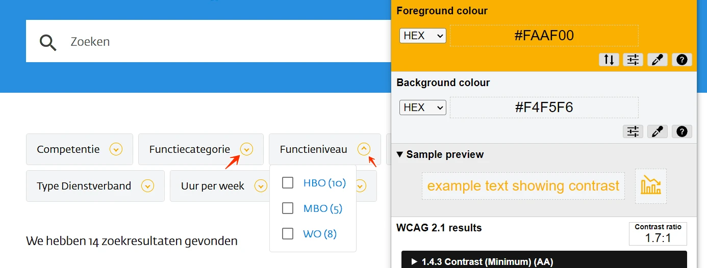

Content audit digitale toegankelijkheid van website vacatures.noord-holland.nl
Samenvatting
Wij hebben de content van de website vacatures.noord-holland.nl onderzocht tussen 10 en 16 september 2025. Op dit moment zijn 21 van de 33 succescriteria als voldoende beoordeeld. In dit rapport lees je wat er bij de overige 12 nog fout gaat, en hoe je dat kunt verbeteren.
#1 - Kleurcontrast van tekst is te laag (tekst kleiner dan 24px en niet vetgedrukt)
Impact: GrootType: ContentWCAG: 1.4.3
Op alle pagina's staat blauwe tekst (#288FDF) op een witte achtergrond of witte tekst op een blauwe achtergrond, zoals bij de links op de homepagina “Collectiebeheerder archeologiemuseum Huis van Hilde”. De contrastratio is te laag: 3,5:1.

Hetzelfde probleem treedt op wanneer je met de muis over de links in het hoofdmenu beweegt. Tekst op informatieve elementen zoals links en knoppen moet altijd voldoende contrast hebben, ook als het element toetsenbord focus krijgt of als de bezoeker met de muiscursor over het element beweegt (hover).
#### Oplossing:
Deze tekst is kleiner dan 24px en niet vetgedrukt, daarom moet het contrast minimaal 4,5:1 zijn. Zorg dat de tekst ook als de muis eroverheen gaat minimaal een contrast van 4,5:1 heeft met de achtergrond. Op deze pagina staat een instructie die uitlegt hoe je kleurcontrast kan testen: https://properaccess.nl/hoe-test-ik-kleurcontrast/.
### Kleurcontrast van tekst is te laag (tekst kleiner dan 24px en niet vetgedrukt)
Impact: MediumType: ContentWCAG: 1.4.3
Op alle pagina's staat in de footer blauwe tekst (#288FDF) op een grijze achtergrond (#F4F5F6), zoals bij de link “Vacatures” en andere links. De contrastratio is te laag: 3,2:1.
Oplossing:
Deze tekst is kleiner dan 24px en niet vetgedrukt, daarom moet het contrast minimaal 4,5:1 zijn. Op deze pagina staat een instructie die uitlegt hoe je kleurcontrast kan testen: https://properaccess.nl/hoe-test-ik-kleurcontrast/.
#2 - Kop is niet gemarkeerd als koptekst
Impact: MediumType: ContentWCAG: 1.3.1
Op alle pagina's zijn op een klein scherm in het mobiele menu de teksten “Vacancies” en “Employees” niet als kop gemarkeerd. Bezoekers die hulpsoftware gebruiken hebben niets aan een (tussen)kop die er wel uitziet als kop, maar niet als kop is gemarkeerd.

Via de koppen op een pagina kunnen gebruikers van hulpsoftware de inhoud scannen of snel naar een bepaalde sectie springen. Maar dat kan alleen als de kop ook echt in de code staat. Als koppen alleen visueel als kop zijn vormgegeven (bijvoorbeeld vetgedrukt), ontstaat bovendien nog een ander probleem: de structuur van de informatie in de code wijkt dan af van de visuele structuur. Op deze pagina staat een instructie hoe je zelf koppen op een webpagina kan testen: https://properaccess.nl/zo-controleer-je-de-koppenstructuur-van-je-website/.
#### Oplossing:
Dit voorkom je door koppen altijd te markeren met het juiste `HTML`-element, op het juiste kopniveau: `h1`, `h2`, `h3`, `h4`, `h5` of `h6`. Meestal kun je het kopniveau kiezen via de content-editor in je CMS. De HTML-code voor de kop wordt dan automatisch toegepast.
Link naar pagina: https://vacatures.noord-holland.nl/vacatures/assetmanager-infra-elektronische-wegsystemen/4739a02d-1dc8-4ea8-869a-7888206b8ae8
Geen nieuwe bevindingen.
Link naar pagina: https://vacatures.noord-holland.nl/vacatures/collectiebeheerder-archeologiemuseum-huis-van-hilde/44eff85e-e43a-4758-91e0-1964de231cb1
#3 - Kleurcontrast van informatieve iconen is onvoldoende
Impact: MediumType: ContentWCAG: 1.4.11
Op deze pagina staan onder “Collectiebeheerder archeologiemuseum Huis van Hilde” informatieve iconen. De witte iconen tegen de oranje (#FAAF00) achtergrond hebben een contrastverhouding van 1,9:1, wat lager is dan de vereiste 3,0:1 voor grafische elementen die informatie overbrengen. Het kleurcontrast van informatieve iconen moet minimaal 3,0:1 zijn.

Hetzelfde probleem doet zich voor:
op de pagina https://vacatures.noord-holland.nl/vacatures/medewerker-publieksservice/6d82fbbf-83d0-45aa-b408-91becb743496;
op de pagina https://vacatures.noord-holland.nl/vacatures/operatorcoordinator-brugbediening/3cbe6f39-cdc2-42c2-bf66-0c7bf3927b85;
op de pagina https://vacatures.noord-holland.nl/vacatures/coordinator-vrachtwagenheffing/f5216eb2-6b94-4198-968a-d43d0b65a60e; en andere.
Oplossing:
Zorg dat de iconen voldoende contrast hebben.
#4 - De beschrijving van het iframe is niet uniek of betekenisvol
Impact: MediumType: ContentWCAG: 2.4.6
Op deze pagina staat een iframe met een video. De titel “YouTube video player” beschrijft de inhoud van de video niet voldoende. Iframes moeten een goede beschrijving hebben. Die zet je meestal in het title-attribuut van het iframe. Daarin moet staan om welk type inhoud het gaat (bijvoorbeeld een podcast of video) en waar het inhoudelijk over gaat. Deze beschrijving van de inhoud moet uniek en betekenisvol zijn. Door de beschrijving kunnen blinde bezoekers beslissen of het de moeite waard is om de inhoud van het iframe te verkennen.
Hetzelfde probleem doet zich voor:
op de pagina https://vacatures.noord-holland.nl/vacatures/medewerker-publieksservice/6d82fbbf-83d0-45aa-b408-91becb743496;
op de pagina https://vacatures.noord-holland.nl/vacatures/operatorcoordinator-brugbediening/3cbe6f39-cdc2-42c2-bf66-0c7bf3927b85;
op de pagina https://vacatures.noord-holland.nl/vacatures/coordinator-vrachtwagenheffing/f5216eb2-6b94-4198-968a-d43d0b65a60e; en andere.
Oplossing:
Verander de tekst van het title-attribuut van de iframes zodat duidelijk is welk type inhoud elk iframe bevat, en waar het inhoudelijk over gaat.
#5 - Decoratieve afbeelding is niet verborgen voor schermlezers
Impact: MediumType: ContentWCAG: 1.1.1
Op deze pagina staan onder "Contactpersonen" contactpersonen met decoratieve profielfoto’s. Het tekstalternatief is bijvoorbeeld "profielfoto van Info Personeel". Deze decoratieve afbeeldingen geven geen extra informatie en moeten daarom verborgen worden voor schermlezers.
Hetzelfde probleem doet zich voor:
op de pagina https://vacatures.noord-holland.nl/vacatures/medewerker-publieksservice/6d82fbbf-83d0-45aa-b408-91becb743496;
op de pagina https://vacatures.noord-holland.nl/vacatures/operatorcoordinator-brugbediening/3cbe6f39-cdc2-42c2-bf66-0c7bf3927b85;
op de pagina https://vacatures.noord-holland.nl/vacatures/coordinator-vrachtwagenheffing/f5216eb2-6b94-4198-968a-d43d0b65a60e; en andere.
Oplossing:
Voor img-elementen gebruik je een leeg alt-attribuut: alt=””.
#6 - Video bevat tekst of logo’s waarvoor geen alternatief is
Impact: MediumType: ContentWCAG: 1.2.3, 1.2.5
Op deze pagina wordt onder de kop "Goed om te weten" een video getoond. De video bevat op verschillende momenten tekst en logo’s (bijvoorbeeld rond 0:02 en 1:53). Er is echter geen media-alternatief of audiodescriptie beschikbaar. Deze video bevat visuele informatie (tekst en logo’s) die ontoegankelijk is voor blinde gebruikers. Bezoekers die blind of slechtziend zijn, missen hierdoor informatie. Dit probleem heeft ook betrekking op SC 1.2.5, omdat er geen audiodescriptie aanwezig is.
Hetzelfde probleem doet zich voor:
op de pagina https://vacatures.noord-holland.nl/vacatures/medewerker-publieksservice/6d82fbbf-83d0-45aa-b408-91becb743496;
op de pagina https://vacatures.noord-holland.nl/vacatures/operatorcoordinator-brugbediening/3cbe6f39-cdc2-42c2-bf66-0c7bf3927b85;
op de pagina https://vacatures.noord-holland.nl/vacatures/coordinator-vrachtwagenheffing/f5216eb2-6b94-4198-968a-d43d0b65a60e; en andere.
Oplossing:
Dit kan voor het succescriterium 1.2.3 worden opgelost met een uitgeschreven tekst (media-alternatief), maar om aan succescriterium 1.2.5 te voldoen, moet een audiobeschrijving worden toegevoegd die de visuele elementen in de video beschrijft, zoals namen, functies, logo’s en teksten.
#7 - De Youtube-video’s gebruiken letters als sneltoetsen
Impact: MediumType: ContentWCAG: 2.1.4
Op deze pagina staat een YouTube-videospeler die gebruikmaakt van sneltoetsen met één teken. De YouTube-speler gebruikt sneltoetsen, zoals de ‘k’ om de video te starten of stoppen en de ‘m’ om het geluid uit te zetten. Deze sneltoetsen botsen met schermlezers. Ze blijven namelijk actief, ook als de toetsenbordfocus op een ander element in de videospeler staat. Dit kan problemen opleveren voor mensen die met spraakbediening werken, omdat deze letters soms in de uitgesproken woorden zitten. Ook voor mensen die per ongeluk een toets op het toetsenbord indrukken is dit onhandig.
Hetzelfde probleem doet zich voor:
op de pagina https://vacatures.noord-holland.nl/vacatures/medewerker-publieksservice/6d82fbbf-83d0-45aa-b408-91becb743496;
op de pagina https://vacatures.noord-holland.nl/vacatures/operatorcoordinator-brugbediening/3cbe6f39-cdc2-42c2-bf66-0c7bf3927b85;
op de pagina https://vacatures.noord-holland.nl/vacatures/coordinator-vrachtwagenheffing/f5216eb2-6b94-4198-968a-d43d0b65a60e; en andere.
Oplossing:
Je lost dit op door de parameter disablekb=1 toe te voegen aan de URI van de video in de HTML-code. Hiermee schakel je de sneltoetsen uit, terwijl toetsenbordbediening mogelijk blijft. Bekijk voor meer informatie https://developers.google.com/youtube/player_parameters#disablekb (Engels).
#8 - Foutmeldingen hebben te weinig contrast
Impact: MediumType: ContentWCAG: 1.4.3
Op deze pagina staat onder de kop “Persoonsgegevens” een formulier. De foutmelding in dit formulier is rode (#F44336) tekst op een witte achtergrond, bijvoorbeeld: “Het veld voornaam is niet ingevuld. Dit veld is verplicht.”. De contrastverhouding is 3,7:1. Foutmeldingen moeten, net als andere teksten, voldoen aan de minimale contrasteisen.

Hetzelfde probleem doet zich voor bij rode (`#F44336`) tekst op een grijze (`#F5F5F5`) achtergrond, bijvoorbeeld bij het label “Voornaam”. De contrastverhouding is 3,4:1.
Hetzelfde probleem doet zich voor:
op de pagina https://vacatures.noord-holland.nl/vacatures/medewerker-publieksservice/6d82fbbf-83d0-45aa-b408-91becb743496;
op de pagina https://vacatures.noord-holland.nl/vacatures/operatorcoordinator-brugbediening/3cbe6f39-cdc2-42c2-bf66-0c7bf3927b85;
op de pagina https://vacatures.noord-holland.nl/vacatures/coordinator-vrachtwagenheffing/f5216eb2-6b94-4198-968a-d43d0b65a60e; en andere.
Oplossing:
Zorg dat het contrast tussen de kleur van de foutmelding en de achtergrond minimaal 4,5:1 is.
#9 - Instructie bij invoerveld is niet altijd zichtbaar
Impact: MediumType: ContentWCAG: 3.3.2
Op deze pagina staat er onder de heading “Motivatiebrief ” een invoerveld met de instructie “Motivatiebrief moet tussen de 20 en 10.000 tekens bevatten”. Deze instructie is echter niet permanent zichtbaar op de pagina; de instructie wordt weergegeven als placeholdertekst en verdwijnt zodra er tekst wordt ingevoerd.
Hetzelfde probleem doet zich voor:
op de pagina https://vacatures.noord-holland.nl/vacatures/medewerker-publieksservice/6d82fbbf-83d0-45aa-b408-91becb743496;
op de pagina https://vacatures.noord-holland.nl/vacatures/operatorcoordinator-brugbediening/3cbe6f39-cdc2-42c2-bf66-0c7bf3927b85;
op de pagina https://vacatures.noord-holland.nl/vacatures/coordinator-vrachtwagenheffing/f5216eb2-6b94-4198-968a-d43d0b65a60e; en andere.
Oplossing:
Zorg dat instructies vooraf al zichtbaar en toegankelijk zijn voor alle bezoekers, niet alleen in foutmeldingen. Verplaats de instructie zodat deze permanent zichtbaar is in de buurt van het invoerveld.
#10 - Element heeft niet de juiste toegankelijke rol en toegankelijke naam
Impact: MediumType: TechniekWCAG: 4.1.2
Op deze pagina staat er onder de heading “Motivatiebrief” een invoerveld. Dit invoerveld mist een correcte toegankelijke rol en een toegankelijke naam. Elk HTML-element heeft een rol. Dit betekent dat het element bepaalde eigenschappen en functies heeft om informatie aan de bezoeker te geven of om informatie van de bezoeker te ontvangen. De rol bepaalt dus wat het element doet. Schermlezers en andere hulpmiddelen moeten de correcte rol van elk element op een webpagina kennen. Zo kunnen ze op een slimme manier met het element omgaan en aan de bezoeker uitleggen wat het element doet.

Hetzelfde probleem doet zich voor op de pagina https://vacatures.noord-holland.nl/vacatures/medewerker-publieksservice/6d82fbbf-83d0-45aa-b408-91becb743496; op de pagina https://vacatures.noord-holland.nl/vacatures/operatorcoordinator-brugbediening/3cbe6f39-cdc2-42c2-bf66-0c7bf3927b85; op de pagina https://vacatures.noord-holland.nl/vacatures/coordinator-vrachtwagenheffing/f5216eb2-6b94-4198-968a-d43d0b65a60e; en andere.
#### Oplossing:
Zorg ervoor dat het element de juiste rol heeft en geef het invoerveld een toegankelijke naam, bijvoorbeeld door het label-element te koppelen aan het veld.
### Toegankelijke namen zijn in het Engels geschreven
Impact: MediumType: ContentWCAG: 3.1.2
Op deze pagina staan onder de kop “Motivatiebrief” knoppen. De toegankelijke namen van deze knoppen zijn in het Engels geschreven, bijvoorbeeld “Clear Formatting”. Deze teksten worden voorgelezen door schermlezers volgens de uitspraakregels van de primaire taal van de pagina (in dit geval Nederlands).

Hetzelfde probleem doet zich voor:
op de pagina https://vacatures.noord-holland.nl/vacatures/medewerker-publieksservice/6d82fbbf-83d0-45aa-b408-91becb743496;
op de pagina https://vacatures.noord-holland.nl/vacatures/operatorcoordinator-brugbediening/3cbe6f39-cdc2-42c2-bf66-0c7bf3927b85;
op de pagina https://vacatures.noord-holland.nl/vacatures/coordinator-vrachtwagenheffing/f5216eb2-6b94-4198-968a-d43d0b65a60e; en andere.
Oplossing:
Vertaal de teksten naar het Nederlands, zodat ze correct worden uitgesproken door schermlezers.
#11 - Kleurcontrast van tekst is te laag (tekst kleiner dan 24px en niet vetgedrukt)
Impact: MediumType: ContentWCAG: 1.4.3
Op deze pagina staat er onder de heading “Motivatiebrief” een invoerveld met grijze (#AAAAAA) placeholdertekst “Motivatiebrief moet tussen de 20 en 10.000 tekens bevatten” op een witte achtergrond. De contrastverhouding is te laag: 2,3:1.
Hetzelfde probleem doet zich voor:
op de pagina https://vacatures.noord-holland.nl/vacatures/medewerker-publieksservice/6d82fbbf-83d0-45aa-b408-91becb743496;
op de pagina https://vacatures.noord-holland.nl/vacatures/operatorcoordinator-brugbediening/3cbe6f39-cdc2-42c2-bf66-0c7bf3927b85;
op de pagina https://vacatures.noord-holland.nl/vacatures/coordinator-vrachtwagenheffing/f5216eb2-6b94-4198-968a-d43d0b65a60e; en andere.
Oplossing:
Deze tekst is kleiner dan 24px en niet vetgedrukt, daarom moet het contrast minimaal 4,5:1 zijn. Op deze pagina staat een instructie die uitlegt hoe je kleurcontrast kan testen: https://properaccess.nl/hoe-test-ik-kleurcontrast/.
#12 - Kleurcontrast van tekst is te laag (tekst kleiner dan 24px en niet vetgedrukt)
Impact: MediumType: ContentWCAG: 1.4.3
Op deze pagina staat onder de kop “Persoonsgegevens” een formulier. Wanneer er gegevens in de invoervelden worden ingevoerd, veranderen de veldlabels van grijs naar blauw (#288FDF) op een lichtgrijze (#F4F5F6) achtergrond, bijvoorbeeld “Voornaam”. De contrastverhouding is te laag: 2,7:1. Deze teksten worden voorgelezen door schermlezers volgens de uitspraakregels van de primaire taal van de pagina (in dit geval Nederlands).

Hetzelfde probleem doet zich voor:
op de pagina https://vacatures.noord-holland.nl/vacatures/medewerker-publieksservice/6d82fbbf-83d0-45aa-b408-91becb743496;
op de pagina https://vacatures.noord-holland.nl/vacatures/operatorcoordinator-brugbediening/3cbe6f39-cdc2-42c2-bf66-0c7bf3927b85;
op de pagina https://vacatures.noord-holland.nl/vacatures/coordinator-vrachtwagenheffing/f5216eb2-6b94-4198-968a-d43d0b65a60e; en andere.
Oplossing:
Vertaal de teksten naar het Nederlands, zodat ze correct worden uitgesproken door schermlezers.
Link naar pagina: https://vacatures.noord-holland.nl/vacatures/coordinator-vrachtwagenheffing/f5216eb2-6b94-4198-968a-d43d0b65a60e
Geen nieuwe bevindingen.
Link naar pagina: https://vacatures.noord-holland.nl/vacatures
#13 - Informatieve elementen zijn verborgen
Impact: MediumType: ContentWCAG: 1.3.1, 4.1.2
Op deze pagina zijn er artikelen met knoppen met een hart-icoon. Wanneer op deze knop wordt geklikt, opent er een dialoogvenster met een knop met een kruisje. Dit icoon is verborgen voor hulpsoftware met aria-hidden="true".

Het attribuut `aria-hidden="true"` zorgt ervoor dat inhoud verborgen wordt voor schermlezers. Gebruik dit daarom niet bij informatieve elementen.
Dit probleem heeft ook betrekking op SC 4.1.2, omdat deze knop geen toegankelijke naam heeft.
#### Oplossing:
Verwijder het attribuut `aria-hidden=”true”`.
### Links door kleur te onderscheiden van gewone tekst
Impact: MediumType: ContentWCAG: 1.4.1
Op deze pagina zijn er artikelen met knoppen met hart-iconen. Wanneer op deze knop wordt geklikt, opent er een dialoogvenster. In dit dialoogvenster staat een alinea met de link “Log direct in”. Kleur is het enige verschil tussen de link en de statische tekst.
Deze links zijn alleen te herkennen aan een kleurverschil met de gewone tekst. Dit kan een probleem zijn voor kleurenblinde of slechtziende bezoekers. Zij kunnen de kleuren mogelijk niet onderscheiden en zien dan niet dat er een link in de tekst staat.
Hetzelfde probleem doet zich voor:
op de pagina https://vacatures.noord-holland.nl/toegankelijkheidsverklaring met de link “support@solutionsfactory.nl”;
op de pagina https://vacatures.noord-holland.nl/vacatures/collectiebeheerder-archeologiemuseum-huis-van-hilde/44eff85e-e43a-4758-91e0-1964de231cb1 met de links “Log eerst in”, “privacyvoorwaarden”;
op de pagina https://vacatures.noord-holland.nl/vacatures/medewerker-publieksservice/6d82fbbf-83d0-45aa-b408-91becb743496; en andere.
Oplossing:
Zorg ervoor dat links in de tekst op zijn minst op één andere manier te herkennen zijn die niet afhankelijk is van kleur. Bijvoorbeeld:
Onderstrepen: geef de links een onderstreping.
Rand: voeg een subtiele rand (kader) toe aan de links.
Verhoogd contrast + hover-effect: verhoog het contrast tussen de kleur van de links en de omringende tekst tot minimaal 3,0:1, en voeg een tweede visuele indicator toe bij hover, zoals een onderstreping of verandering in de achtergrondkleur.
#14 - Kleurcontrast van informatieve iconen is niet voldoende
Impact: MediumType: ContentWCAG: 1.4.11
Op deze pagina staan er onder het zoekveld secties met verborgen inhoud. Deze secties hebben informatieve pijltjes-icoontjes die aangeven dat de secties geopend kunnen worden. De gele (#FAAF00) iconen tegen de grijze (#F4F5F6) achtergrond hebben een contrastverhouding van 1,7:1, wat lager is dan de vereiste 3,0:1 voor grafische elementen die informatie overbrengen. Het kleurcontrast van informatieve iconen moet minimaal 3,0:1 zijn.

#### Oplossing:
Zorg dat de iconen voldoende contrast hebben.
Link naar pagina: https://vacatures.noord-holland.nl/vacatures/ervaren-chief-information-security-officer-ciso/c04b011c-9124-4b2f-86e8-784924d31440
Geen nieuwe bevindingen.
Link naar pagina: https://vacatures.noord-holland.nl/vacatures/junior-projectleider-studiefase-civiele-techniek/8111bd30-ba0a-4c44-b3c2-1dfbc2f821d2
Geen nieuwe bevindingen.
Link naar pagina: https://vacatures.noord-holland.nl/vacatures/medewerker-publieksservice/6d82fbbf-83d0-45aa-b408-91becb743496
#15 - Kop is niet gemarkeerd als koptekst
Impact: MediumType: ContentWCAG: 1.3.1
Op deze pagina is de volgende tekst niet opgemaakt als een kop: "Hier ga je werken". Bezoekers die hulpsoftware gebruiken hebben niets aan een (tussen)kop die er wel uitziet als kop, maar niet als kop is gemarkeerd. Via de koppen op een pagina kunnen gebruikers van hulpsoftware de inhoud scannen of snel naar een bepaalde sectie springen. Maar dat kan alleen als de kop ook echt in de code staat. Als koppen alleen visueel als kop zijn vormgegeven (bijvoorbeeld vetgedrukt), ontstaat bovendien nog een ander probleem: de structuur van de informatie in de code wijkt dan af van de visuele structuur. Op deze pagina staat een instructie hoe je zelf koppen op een webpagina kan testen: https://properaccess.nl/zo-controleer-je-de-koppenstructuur-van-je-website/.
Oplossing:
Dit voorkom je door koppen altijd te markeren met het juiste HTML-element, op het juiste kopniveau: h1, h2, h3, h4, h5 of h6. Meestal kun je het kopniveau kiezen via de content-editor in je CMS. De HTML-code voor de kop wordt dan automatisch toegepast.
Link naar pagina: https://vacatures.noord-holland.nl/vacatures/operatorcoordinator-brugbediening/3cbe6f39-cdc2-42c2-bf66-0c7bf3927b85
Geen nieuwe bevindingen.
Link naar pagina: https://vacatures.noord-holland.nl/talentpool
#16 - Decoratieve afbeelding is niet verborgen voor schermlezers
Impact: MediumType: ContentWCAG: 1.1.1
Op deze pagina staan onder de heading “Wat kun je toevoegen aan je profiel?” decoratieve iconen met alternatieve tekst, bijvoorbeeld “account_circle”. Deze decoratieve afbeeldingen geven geen extra informatie en moeten daarom verborgen worden voor schermlezers.
Oplossing:
Met aria-hidden=”true” kun je decoratieve afbeeldingen verbergen voor schermlezers.
Over dit onderzoek
Leeswijzer
Onze rapporten zijn anders. Bij het bespreken van de gevonden problemen volgen wij niet de structuur van de norm, maar die van jouw website of app. Hierdoor kun je gewoon per pagina of scherm aan de slag gaan. Wel zo makkelijk! Je vindt verderop een overzicht van alle pagina’s met problemen.
We geven je bij elk gevonden issue een paar voorbeelden, maar niet een complete lijst. Controleer zelf of het probleem ook nog op andere plekken voorkomt. Zie het rapport als een leidraad.
Gebruikte norm
Dit onderzoek laat zien in hoeverre de website op dit moment voldoet aan WCAG 2.2, niveau A en AA. WCAG staat voor Web Content Accessibility Guidelines. Dit is de internationale norm voor digitale toegankelijkheid. De Europese norm EN 301 549 bevat alle eisen van WCAG op niveau A en AA.
In dit rapport hebben we korte beschrijvingen van de succescriteria uit de norm opgenomen, met een algemene uitleg erbij. Wil je ze helemaal lezen? Bekijk dan de documentatie van WCAG.
Gebruikte onderzoeksmethode
We gebruiken de onderzoeksmethode WCAG-EM van het W3C. Het proces ziet er als volgt uit:
vaststellen wat binnen en buiten scope valt
vaststellen welke technologieën zijn gebruikt
steekproef (sample) samenstellen
steekproef onderzoeken
gevonden issues beschrijven
Het grootste deel van het onderzoek doen we met de hand. Voor een deel van de toegankelijkheidseisen gebruiken we automatische tools als ondersteuning, zoals axe-core en Chrome Developer Tools.
Belangrijk om te weten
Dit rapport helpt je om de toegankelijkheid van je website te verbeteren. Maar let op: het is geen definitieve, volledige lijst van alle aanwezige toegankelijkheidsproblemen. Dat zit zo:
Het is een steekproef
Ten eerste is het onderzoek gebaseerd op een steekproef. Die is op een betrouwbare manier genomen, en de meeste problemen zullen daardoor zeker aan het licht komen. Toch kan een probleem net buiten de steekproef vallen. Bij een volgend onderzoek kan het wel ontdekt worden.
Op basis van falsificatie
We beoordelen vanuit het principe van falsificatie. Dat houdt in dat we proberen te bewijzen dat iets niet waar is, in plaats van te bevestigen dat het klopt. ‘Voldoet’ betekent daarom dat we geen reden hebben gevonden om een punt af te keuren. Maar als we later wél een reden vinden, kan het alsnog worden afgekeurd.
Voortschrijdend inzicht
Het komt voor dat de beoordeling van een succescriterium op detailniveau verandert. De norm beschrijft namelijk niet élk mogelijk scenario. Samen met andere onderzoeksbureaus overleggen we hoe we met bepaalde situaties omgaan. Zo kan iets dat nu wordt afgekeurd, soms bij een volgend onderzoek worden goedgekeurd en andersom.
Oplossen leidt tot nieuw probleem
Ten slotte kan het gebeuren dat bij het oplossen van een probleem onbedoeld een nieuw toegankelijkheidsprobleem ontstaat. Dat komt dan bij een volgend onderzoek pas naar voren.
Hoe werkt dit rapport?
Bevindingen bekijken en filteren
Alle gevonden toegankelijkheidsproblemen staan onder Gevonden problemen. Je kunt de bevindingen filteren op:
Impact (Groot, Medium, Klein, Advies) — hoe ernstig is het probleem voor de gebruiker?
Type (Content, Techniek) — moet de inhoud of de techniek worden aangepast?
Status (Open, Opgelost) — welke problemen zijn al verholpen?
Voortgang bijhouden
Je kunt je voortgang op twee manieren bijhouden:
CSV-export — exporteer alle bevindingen als CSV-bestand en laad het in een (online) spreadsheet om met je team samen te werken.
Jira-export — exporteer alle bevindingen als Jira-compatibel CSV-bestand. Importeer het via Jira > Issues > Import issues from CSV. Bevindingen worden aangemaakt als bugs met prioriteit op basis van impact.
Registreer in de browser — activeer deze optie om per bevinding bij te houden of het is opgelost. Je voortgang wordt opgeslagen in je browser. Niemand anders kan je resultaat zien. Let op: de voortgang is gekoppeld aan je browser. Als je een andere browser of een ander apparaat gebruikt, begint de telling opnieuw.
Plan van aanpak — download een geprioriteerd plan van aanpak om de gevonden problemen stap voor stap op te lossen. Dit is beschikbaar bij audits vanaf maart 2026.
Link naar een specifieke bevinding delen
Bij elke bevinding verschijnt een link-icoon wanneer je er met de muis overheen gaat. Klik op dit icoon om de directe link naar die bevinding te kopiëren. Je kunt deze link plakken in een e-mail of chatbericht, bijvoorbeeld om een vraag te stellen aan Proper Access over een specifiek punt.